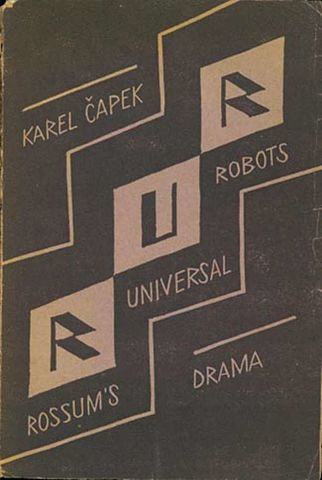

What is a Golem?
I could probably write an essay about what a golem is and what role the myth of the golem has in literary history, but I won’t. I’ve actually talked about it in a book, in Italian, about different golems: the Hebrew myth, robots, and a short story by Primo Levi.
Primo Levi, The Servant (1968-70)
Building a Golem is not in itself a difficult undertaking, and many have tried it. In fact, a Golem is only a little more than nothing; it’s a portion of matter, or rather of chaos, closed up in a human or animal likeness. In short, it’s a simulacrum and, as such, good for nothing.
The difference among Golems lies in the precision and thoroughness of the instructions that guide their construction. […] Now, Aryeh was not a blasphemer, and he wasn’t proposing to create a second Adam. He intended to construct not a man, but, rather, a po’el—let’s call him a worker—a servant, faithful and strong, if not too discerning: in other words, what’s called in his Bohemian language a robot.
In order to achieve this, instructions were required of a more complex nature than those needed to make an idol that sits inactive and sneering in its niche, but not so complex as those needed for creating a second Adam—-“a being made in the image of God.” You needn’t search for these instructions in the whirlwind of a starry sky, or in a crystal ball, or in the gibberish of the Python Spirit; they are already written, hidden in the books of the Law, all you have to do is read and choose—-that is, select, elect. Not one letter, not one mark on the scrolls of the Law is there by chance; to one who knows how to read them, all appears clear, any undertaking, past, present, and future; the formula and the destiny of humanity and of every man, your own, and those of all flesh, down to the blind worm that makes its way in the mud. Aryeh made his calculations and produced the formula he desired for a Golem, one that would not surpass human abilities. Its composition filled thirty-nine pages, the exact number of his children, and the coincidence pleased him.
He was a giant with a human figure from the belt upward. Even this has an explanation: the belt is a frontier, only above the belt is man made in God’s image, while below he is a beast. For this reason, a wise man does not forget to wear it. Below the belt the Golem was truly a Golem-—that is, a fragment of chaos. Behind his chain mail, which hung to the ground like an apron, all that could be glimpsed was a solid jumble of clay, metal, and glass.
As Levi said years later, this is “an ironic reworking of the Golem legend, it is imagined that Rabbi Löw of Prague knew the secrets of genetics and computer science, and that therefore the Golem himself, his creature, was nothing but a robot” (Itinerary of a Jewish Writer, 1982).
Primo Levi’s golem is also a good metaphor of this project. Our GOLEM has a clearly defiend body shape only above the belt: these are the structured metadata and the textual features extracted from stories. Below that there is a mass without clear shape when looked from a distance, the unstructured data formed by the text of the stories, which are made of language and human creativity, and express much more than what the metadata can grasp.
The history of the golem is also a interesting because it underwent several transformations over the centuries. This is what our GOLEM wants to track, the changes that fictional forms undergo when they cross languages, cultures, and time.
Before the figure of the golem entered the collective Western imagination through 19th-century Jewish folklore and the early literary and theatrical adaptations of the time, the contexts in which such a mythologem was developed were those of Jewish theology, mysticism, and magic. In the Torah the term golem appears only once, in Psalm 139, while in the Talmud and Midrashim the word is used both in reference to Adam and in reporting some episodes of the creation of one man by another. Moreover, from the 12th century onward the theme is also attested in Kabbalistic writings (Moshe Idel, The Golem).
Moshe Idel observed that among all the medieval texts he has collated, only in a couple of cases can golem reasonably be interpreted as “amorphous,” and he therefore wonders why this meaning has been transposed into the modern tradition, spreading so widely. The suggested answer is the same as that advanced by Gershom Scholem, namely, that medieval Hebrew philosophy uses it as a Hebrew term for matter, the formless hyle.
In the 13th century, a new element appears in the golem’s story: in the context of Ashkenazi Chassidism emerges what Idel considers an original contribution to the myth, namely the use of the alphabet as an essential component of the procedures for animating the creature (Idel, The Golem, p. 78; cf. Eleazar of Worms, Commentary on Sefer Yezirah, fol. 15D).

It is from the 19th century onward that the Golem myth begins to become more articulated, and the themes that emerge in the narratives of that period gradually emancipate themselves from the importance given to the moment of the anthropoid’s creation. Largely due to the wide dissemination of the legend of Rabbi Loew, the golem becomes a creature capable of various achievements and its psychology becomes the subject of imaginative hypotheses (Idel, The Golem, pp. 268-69). In Rabbi Loew’s story, the creation of the Golem is no longer merely a magical or mystical act concerning some wise person: while not leaving out the procedure necessary to shape and animate the artificial creature, the emphasis is more on the social function of the enterprise, which is initiated to give the Jews of the Prague ghetto a defender to protect them from anti-Semitic attacks and pogroms. The 19th century is also the century in which mythologem crossed the threshold of Jewish communities to enter the shared imagination of much of Europe thanks to Mary Shelley’s short story Frankenstein (1818).

Since the early 20th century, there have been numerous contributions to the dissemination of the legend in non-Jewish circles: literary, theatrical, and cinematic works have elaborated and transformed the golem mythologem in various ways (Gustav Meyrink 1915, Der Golem; Paul Wegener 1920, The Golem: How He Came into the World; Karel Čapek 1921, R.U.R. Rossum’s Universal Robots). Čapek is the first to transform the myth by placing it in a radically different context, i.e., in a world in which the transition from artisanal forms of production to the capitalist industrial system was established. In the era of technical reproducibility, the creation of the golem becomes a process of serial production in the factory. This socio-economic upheaval is so drastic that it has strong repercussions on the way the golem is conceived: designed as a robot, its function is no longer that of a heroic defender of the ghetto from the enemies of the Jews: in the novel, the golems are workers, a link that can be inserted into the assembly lines of many industries. From R.U.R. onward, myth and reality began to converge more and more - Levi himself called his own computer “golem” (The Scribe, 1984) - and science fiction has come to create myths so incisive and popular that one often no longer feels the need to compare the multitude of stories of cyborgs, robots, and artificial intelligences of various kinds with the Jewish myth of the golem.
Our GOLEM is a golem containing the knowledge of many other golems. And we want to make sure that its construction can be replicated by knowing the genetic code and computer language used to create it in the first place. However, we are aware that creativity and reading are practices with an exceptional component that cannot be completely reduced to any schema. Indeed, it is madness and ardor that trigger Rabbi Loew’ creative process and also its golem’s self-determination.